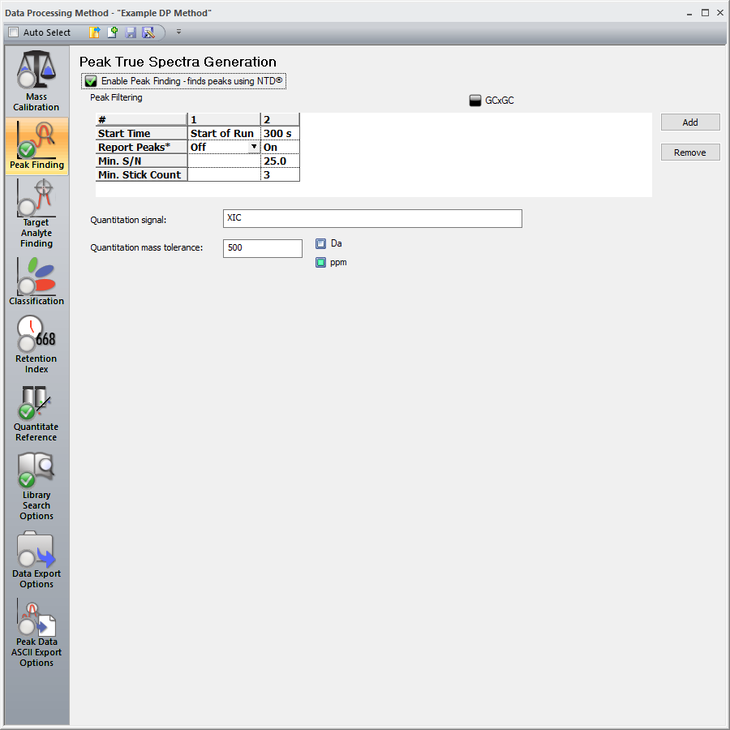

ChromaTOF-BT provides its users a powerful set of tools for both qualitative and quantitative data analysis. This section provides a basic description of each of the data processing tools, elaborates on the workflow of a data processing job, illustrates the various ways to process a sample, and demonstrates how to monitor the status of a data processing job. Below is a list of each of the data processing tasks available in the ChromaTOF-BT software platform with a brief description of each.
Below is an example of a data processing method with Peak Finding, Quantitate/Reference (an embedded Quantitation Method) and Library Searching tasks enabled.
When processing samples ChromaTOF will always execute data processing tasks from the top down in the sequence listed in the Data Processing method tab on the left side of the method. In the example Data Processing method shown above first the Peak Finding task will find and deconvolute all the peaks in the sample that meet the user defined criteria. Next, the analytes that satisfy the peak matching criteria in the embedded Quantitation Method will be assigned the ID, group label, and integrated as defined in the Quant method; then quantitated using the corresponding calibration equation. Finally, any remaining analytes not handled by the Quantitation Method will be identified during the Library Search task.
As the list above indicates, there are two modes of peak discovery either Peak Finding or Target Analyte Finding. Each is intended for a specific purpose and has advantages as well as disadvantages.
The user can elect to include a data processing job to a given sample immediately after acquisition. This is done by including the desired data processing method within the corresponding line of the Acquisition Queue.
To save time multiple sample acquisitions can be assigned to a single DP method using a single operation. This is done through the use of the Fill command. Highlight and right click all cells which will be processed with the same data processing method then select the desired data processing method.
Additionally, samples can be processed from Acquired Samples view by right clicking on the sample to be processed then select “Process Data…”. Next, select the sample or samples to be included in the data processing job. To select a range of samples hold the Shift Key while selecting the first and last sample, alternatively hold the Ctrl Key to select multiple nonconsecutive samples. Finally, select the Data Processing method. While a sample is being processed it will have a gear overlaid on its icon and it cannot be reviewed until processing is completed.
The status of a series of data processing jobs can be monitored and edited by means of the Data Processing Queue & Monitor windows. The Data Processing Queue and Monitor windows can be access by the top ribbon under the “Views” tab.
If a sample is data processed multiple times, the earlier data processing iterations are not lost or overwritten. Each data processing iteration, and the corresponding data processing method are saved and can be retrieved. Even if the data processing method has been deleted or changed, its state when the sample was processed is retained. To retrieve a historical data processing iteration or method right click on the desired sample file name and select “Select DP Result…”. In the resulting prompt, the name of each data processing method used to process the sample will be listed. By selecting a given data processing method from the list and clicking ok, the data processing results will revert back to the corresponding state from that data processing iteration. This includes all manual changes for example, analyte ID changes, defining a group label, or altering the Quant mass.
To save a historical copy of a data processing method, right click within the desired DP method and select “Save As”. You will then be prompted to define the name and location of the selected DP method.